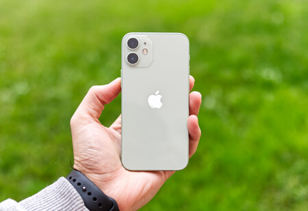

Algunas marcas de móviles:
- Samsung
- Xaomi
- Iphone
- Alcatel
- Xperia
- Zte
Medianamente un teléfono móvil no suele costar muy barato pero el valor mínimo si es barato ya que puede redondear sobre unos 80-100 euros y los más caros que suelen ser los mas nuevos o los que sean más inteligentes y mejor calidad pueden llegar a costar hasta 1.000 euros. El teléfono móvil o teléfono celular es un aparato indispensable en la actualidad; sin embargo su popularización ha sido un fenómeno muy reciente. En un principio el teléfono móvil solo podía ser usado en vehículos por su tamaño, reduciéndose posteriormente a una unidad portátil, y finalmente al tamaño de bolsillo que se utiliza hoy en día. El sistema celular fue creado para satisfacer la demanda de comunicación móvil dentro de un espectro de radiofrecuencia limitado. Esta limitación es el factor original que motivó y sigue motivando el desarrollo del teléfono móvil, frente a otros de los varios factores como la duración de la batería o el tamaño del aparato.Algunos de los precios también suelen ser estos por ser más nuevos o viejos:
| Pieza | Valor | |
|---|---|---|
| Iphone 12 | 1250 |  |
| Iphone 6 | 200 | |
| Xiaomi mi 10 | 230 |